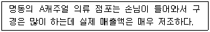
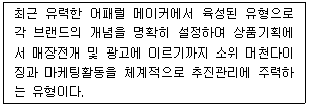
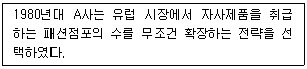
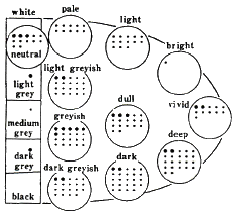

패션머천다이징산업기사 (2009-07-26 기출문제)
1과목: 패션마케팅
1. 패션머천다이징에 대한 설명으로 옳은 것은?
- 패션업체가 당면하고 있는 특정의 패션마케팅 의사결정에 필요한 정보를 수집·분석하는 과정이다.
- 표적고객의 욕구를 만족시키기 위해 적절한 패션제품이나 서비스를 적절한 장소, 적절한 시간에 적절한 양과 적절한 가격으로 제공하기 위한 상품기획이다.
- 디자인실에서 제안한 샘플들 중에서 상품성이 있다고 판단하여 차기 시즌에 대량 생산할 디자인들을 최종 선택하는 과정이다.
- 고객의 욕구충족과 기업의 목적을 동시에 달성시키거나 교환을 창조하거나 이를 증대하기 위한 기업활동이다.
(정답률: 알수없음)

2. 다음 점포의 설명에서 머천다이저가 앞으로 가장 주력해야 하는 제품군은?

- 전략제품
- 최신유행상품
- 중점제품
- 편의품
(정답률: 알수없음)
3. 품평과 수주에 대한 내용 중 틀린 것은?
- 사내품평회 - 디자이너가 디자인한 샘플 중 상품성이 있는 것을 선택한다.
- 생산수량 - 수주회에서 주문받은 대로 결정하는 것이 바람직하다.
- 사외품평회 - 선별된 디자인들을 바이어에게 제시하고 그들로부터 주문을 받는다.
- 전시회 - 아이템별, 스타일별, 컬러별, 사이즈별 주문을 받는다.
(정답률: 알수없음)
4. 리테일 머천다이저에 대한 설명으로 옳은 것은?
- 미가공직물을 구매하여 완성품으로 만들어 판매하는 직물가공 판매업자
- 소비자가 선호할 패션제품을 의류제조업체나 도매상 등으로부터 구매하여 다시 판매하는 사람
- 표적고객의 욕구를 고려한 계절별 패션제품의 디자인을 개발하여 상품화하는 사람
- 디자이너의 독창적인 디자인이나 외국 등의 제휴기업으로부터 제공된 디자인을 응용하여 디자인을 전개하는 사람
(정답률: 알수없음)
5. 제품 포지션(product position)의 의미에 해당되는 것은?
- 상가에서 매장이 위치한 위치
- 백화점에서 자기 브랜드의 제품이 위치한 위치
- 특정제품이 경쟁브랜드들과 비교하여 고객의 마음속에 차지하고 있는 상대적 위치
- 품종별 브랜드 구분에서 자사 브랜드 제품의 위치
(정답률: 알수없음)
6. 다음 중 시장세분화 변수가 옳게 나열된 것은?
- 지리적 세분화 - 지역, 인종, 기후
- 인구통계적 세분화 - 사회계층, 소득, 인구밀도
- 정신 및 심리분석적 세분화 - 라이프스타일, 성격, 사용여부
- 인구통계적 세분화 - 가족생활 주기, 사회계층, 인구밀도
(정답률: 알수없음)
7. 자사브랜드를 중요한 제품속성이나 소비자 편익과 관련시키는 제품포지셔닝 전략은?
- 제품속성에 의한 포지셔닝
- 사용상황에 의한 포지셔닝
- 제품사용자에 의한 포지셔닝
- 이미지에 대한 포지셔닝
(정답률: 알수없음)
8. 어패럴 머천다이저의 역할이 바르게 연결된 것은?
- 정보분석업무 - 제조계획
- 판매촉진지원업무 - 품평회
- 생산지원업무 - 샘플평가와 수정
- 상품기획업무 - 타임스케줄 작성
(정답률: 알수없음)
9. 패션 바이어의 역할에 해당되지 않는 것은?
- 상품구성계획
- 품질관리
- 재고관리
- 구매활동과 관리
(정답률: 알수없음)
10. 다음 중 간접유통 경로의 순서가 옳은 것은?
- 생산자 → 소매상 → 도매상 → 소비자
- 도매상 → 소매상 → 생산자 → 소비자
- 생산자 → 도매상 → 소매상 → 소비자
- 소비자 → 도매상 → 소매상 → 생산자
(정답률: 알수없음)
11. 의류제조업체가 기획과 생산뿐만 아니라 팔다 남은 재고까지 책임지는 유통구조는?
- 완사입제도
- 위탁사입제도
- 대리점제도
- 위탁판매제도
(정답률: 알수없음)
12. 다음 중 판매촉진 계획에 해당되지 않는 것은?
- 패션쇼
- 이벤트(event)
- 할인판매 행사
- 유통경로 결정
(정답률: 알수없음)
13. 마크업(mark-up)의 개념에 해당되는 것은?
- 구매원가와 판매가격의 차이
- 상품의 신속한 판매를 위한 가격인하
- 재고상품의 가격인하
- 고가상품에 대한 가격전략
(정답률: 알수없음)
14. 패션소비자의 활동, 관심, 의견과 관련된 내용으로 시장을 세분화 한다면 다음 중 그 기준이 되는 것은?
- 개성
- 라이프스타일
- 사회계층
- 직업
(정답률: 알수없음)
15. 다음 중 패션정보 분석의 연결이 틀린 것은?
- 패션정보 - 제품의 색상, 소재, 디테일
- 판매실적정보 - 예산계획
- 소비자 정보 - 고객층의 라이프스타일
- 판매정보 - 학술단체 연구 보고서
(정답률: 알수없음)
16. 다음 설명에 해당되는 머천다이저의 유형은?

- 상인형 머천다이저
- 감각인간형 머천다이저
- 고감도형 머천다이저
- 전문관리형 머천다이저
(정답률: 알수없음)
17. 패션머천다이저에 대한 설명으로 틀린 것은?
- 상품기획에서 디자이너와 동반자적 관계를 가지고 소비자의 감성을 정확하게 분석하여야 한다.
- 체계적인 상품기획업무 수행능력과 패션에 대한 높은 심미안을 키우기 위한 감성을 끊임없이 개발해야 한다.
- 생산지향적인 시기에는 패션머천다이저의 역할이 중요하였으나 현대에는 그 역할이 축소되고 있다.
- 의류제조업체의 패션머천다이징 업무에 참여하는 패션전문가로서 혹은 MD라고 불려진다.
(정답률: 알수없음)
18. 기업의 존속에 핵심적 성공요인이 될 수 있는 패션마케팅 관리의 접근방식은?
- 디자인 지향적
- 생산 지향적
- 마케팅 지향적
- 판매 지향적
(정답률: 알수없음)
19. 마케팅의 초점인 고객이 같은 대상일 때 다른 업종, 다른 회사끼리도 힘을 합쳐서 공동으로 고객을 공략하는 노력에 해당되는 마케팅은?
- 그린 마케팅(green marketing)
- 통합적 마케팅(integrated marketing)
- 공존공영 마케팅(symbiotic marketing)
- 전사적 마케팅(total marketing)
(정답률: 알수없음)
20. 비보완적 평가방식 중 소비자가 자신이 가장 중요시하는 평가기준에서 가장 우수하다고 평가되는 상표를 선택하는 방식은?
- 사전편집식(lexicographic rule)
- 연속제거식(sequential elimination rule)
- 결합식(conjunctive rule)
- 비결합식(disconjunctive rule)
(정답률: 알수없음)
2과목: 패션소재기획
21. 다음 중 열가소성 섬유가 아닌 것은?
- 양모
- 나일론
- 트리아세테이트
- 폴리에스테르
(정답률: 알수없음)
22. 주자직의 특성으로 옳은 것은?
- 제직이 간단하다.
- 조직점이 적어서 유연하다.
- 직물의 겉면과 안면(표리)가 같다.
- 사문직이라고도 한다.
(정답률: 알수없음)
23. 의류업체의 소재기획 프로세스를 순서대로 나열된 것은?
- 정보수집 → 소재 맵 → 스타일 개발 및 소재 선정 → 이미지맵 → 발주 및 생산
- 정보수집 → 이미지 맵 → 소재 맵 → 스타일 개발 및 소재 선정 → 발주 및 생산
- 소재 맵 → 스타일 개발 및 소재선정 → 정보수집 → 이미지 맵 → 발주 및 생산
- 소재 맵 → 정보수집 → 이미지 맵 → 스타일 개발 및 소재선정 → 발주 및 생산
(정답률: 알수없음)
24. 양모섬유에서 각질세포가 겹쳐져서 생선 비늘과 같은 외관을 가지며 섬유간의 마찰을 크게 하여 방적성을 좋게 하고 섬유가 서로 얽혀 축융성을 나타내는 표피층은?
- 세리신
- 피브로인
- 스케일
- 케라틴
(정답률: 알수없음)
25. 섬유제품의 관리에 있어서 세탁 취급표시에 관한 용어가 아닌 것은?
- 세탁기 세탁법
- 건조법
- 다림질
- 대전성
(정답률: 알수없음)
26. 다음 중 대량생산된 최종제품의 정해진 검사기준이 아닌 것은?
- 외관
- 공정
- 사이즈
- 품질
(정답률: 알수없음)
27. 면섬유의 방적성과 탄성에 관계하며 품질이 좋고 섬세한 섬유일수록 발달한 면섬유의 특성에 해당되는 것은?
- 천연꼬임
- 피브릴구조
- 중공
- 표피층
(정답률: 알수없음)
28. 제직할 때 경사빔의 장력차이를 이용하여 경사방향으로 요철무늬를 나타낸 직물은?
- 오트밀(oatmeal)
- 크레이프드 신(crepe de chine)
- 시어서커(seersucker)
- 베드포드 코드(bedford cord)
(정답률: 알수없음)
29. 혼방의 일반적인 목적으로 적합하지 않은 것은?
- 단일 섬유에서 얻을 수 없는 촉감
- 단일 섬유의 기능 보완 역할
- 단일 섬유보다 높은 가격
- 단일 섬유에서 얻을 수 없는 텍스처 효과
(정답률: 알수없음)
30. 양모섬유의 성질이 아닌 것은?
- 분자의 구조가 나선형을 띠고 있다.
- 분자쇄와 분자쇄 사이에 수소결합이 발달되어 있다.
- 섬유 중 흡습성이 가장 크다.
- 축융성으로 인한 수축되는 결점이 있다.
(정답률: 알수없음)
31. 다음 중 내일광성이 가장 좋은 섬유는?
- 아세테이트
- 비스코스레이온
- 아크릴
- 나일론
(정답률: 알수없음)
32. 합성섬유가 섬유소비에 큰 영향을 미치게 된 원인이 아닌 것은?
- 내구성과 실용성이 우수
- 의복의 경량화 경향
- 대량생산과 대량소비에 적합
- 천연섬유보다 품질 기능이 우수
(정답률: 알수없음)
33. 새틴, 벨로아, 타프타의 소재에 적합한 감성용어는?
- 두껍다.
- 건조하다.
- 촉촉하다.
- 거칠다.
(정답률: 알수없음)
34. 패션성을 부여하여 제조된 실 장식사의 구조와 특징이 틀린 것은?
- 넵사 - 솜털이 많고 부드러우면서도 보송보송한 실로 로맨틱하면서 고급스러운 멋을 내는 의류용의 실
- 슬럽사 - 실이 부분적으로 굵어져서 꼬임 수가 적거나 거의 꼬여져 있지 않은 부분이 있는 실
- 놉사 - 심지실의 주위에 얽힌 실을 말아 붙여 적당한 간격으로 작은 구슬 모양을 나타낸 실
- 켐피사 - 백색의 각질화된 짧은 모사를 중간중간 끼워 넣는 실
(정답률: 알수없음)
35. 다음 중 내추럴하면서 거친듯한 느낌을 주는 대표적인 소재는?
- 견섬유
- 마섬유
- 면섬유
- 양모섬유
(정답률: 알수없음)
36. 소재기획시 유행예측 정보의 수집시기는?
- 시즌 24개월 전
- 시즌 12개월 전
- 시즌 6개월 전
- 시즌 3개월 전
(정답률: 알수없음)
37. 조젯(georgette)의 설명이 아닌 것은?
- 세탁에 의해 크게 수축된다.
- 직물 조직은 주로 평직이다.
- 꼬임이 많다.
- 매우 매끄러운 느낌을 준다.
(정답률: 알수없음)
38. 소재기획의 요소가 아닌 것은?
- 목표시장의 특성
- 판매실적
- 사용 용도의 다양성
- 생산가격
(정답률: 알수없음)
39. 시대사적 직물 분류에서 꽃을 모티브로 부드럽고 환상적인 경향과 화려한 색상과 곡선의 사용으로 여성적인 이미지를 창출하는 직물은?
- 로코코 직물
- 바로크 직물
- 르네상스 직물
- 비잔틴 직물
(정답률: 알수없음)
40. 다음 소재 감성 단어 중 플랫(flat)과 반대되는 단어는?
- 씬(thin)
- 소프트(soft)
- 웨트(wet)
- 러스틱(rustic)
(정답률: 알수없음)
3과목: 유통관리 및 광고
41. 상품구성의 폭과 깊이에 대한 설명 중 틀린 것은?
- 상품구성의 폭은 소비자에게 제공하는 품목수를 말하고, 깊이는 각 품목의 양을 의미한다.
- 소품종 다량구성은 폭이 좁고 깊은 구성을 의미한다.
- 소매점의 경우 상품구성의 폭은 구색을 갖추는 상품의 종류를 의미한다.
- 중류층을 대상으로 하는 점포는 시즌 초에는 폭이 좁고, 깊은 상품구성이 바람직하다.
(정답률: 알수없음)
42. 상품 구매계획을 수립하기 위한 요소가 아닌 것은?
- 구매처 및 구매 브랜드 결정
- 아이템과 구매량 결정
- 구매시기 결정
- 재고처리 결정
(정답률: 알수없음)
43. 기억을 촉구하거나 상기시키는 목적으로 짧은 문장으로 메시지가 제시되는 소비자용품에 널리 이용되는 광고 매체는?
- 직접우편
- 전화
- 잡지
- 옥외광고
(정답률: 알수없음)
44. 판매제시의 절차인 AIDAS 기법에 해당되는 첫 글자의 용어 뜻으로 틀린 것은?
- A (Awareness) - 인지
- I (Interest) - 흥미
- D (Desire) - 욕구
- S (Satisfaction) - 만족
(정답률: 알수없음)
45. 오늘날과 같은 공급과잉의 시점에서 경영을 어렵게 만드는 가장 큰 원인에 해당되는 것은?
- 품질수준
- 물류용이
- 과잉재고
- 과잉생산
(정답률: 알수없음)
46. 상품기획에서 월별 구매기획 계산 방법으로 옳은 것은?
- 구매기획 = 월별 판매기획 + 월말 재고기획
- 구매기획 = 월별 판매기획 + 월말 재고기획 - 월별 가격인하기획 + 월초재고
- 구매기획 = 월별 판매기획 + 월말 재고기획 + 월초 재고
- 구매기획 = 월별 판매기획 + 월말 재고기획 + 월별 가격 인하기획 - 월초 재고
(정답률: 알수없음)
47. 비주얼 머천다이징의 개념 설명으로 틀린 것은?
- 고객들을 처음으로 대하는 시점에서 보여지는 상품의 모습이다.
- 소비자 구매시점에서 상품을 가능한 최상의 방법으로 제시하여 소비자들의 구매동기를 자극해 상품 구입을 유도하는 것이다.
- 소매점의 마케팅 전략과 목표, 취급 상품의 특성, 소비자의 구매유형을 바탕으로 시즌별이나 특별행사별 비주얼 머천다이징 컨셉을 기획한다.
- 시각적인 상품구성은 무시하고 무엇보다 마케팅적 차원의 목표를 강조하여 달성하고자 한다.
(정답률: 알수없음)
48. 패션상품을 분류할 때 패션 마인드·테이스트에 의한 상품분류가 아닌 것은?
- 어드밴스드(advanced)
- 컨템포러리(contemporary)
- 컨저버티브(consevative)
- 프레스티지(prestige)
(정답률: 알수없음)
49. VMD 활동의 효과에 해당되지 않는 것은?
- 팔리는 디스플레이를 전개할 수 있다.
- 상품의 아이덴티티를 형성할 수 있다.
- 판매환경의 서비스를 개선할 수 있다.
- 기업의 상품기획을 변경시킬 수 있다.
(정답률: 알수없음)
50. 다음 중 바람직한 비주얼 머천다이징 실현으로 기대하기가 가장 어려운 것은?
- 기업문화 창조
- 판매동향 체크
- 상품 소구력 향상
- 효율적인 매장 내 상품관리
(정답률: 알수없음)
51. 상품분류의 순서로 가장 적절한 것은?
- 부문구성 → 품종구성 → 상품구성
- 품종구성 → 상품구성 → 부문구성
- 상품구성 → 부문구성 → 품종구성
- 부문구성 → 상품구성 → 품종구성
(정답률: 알수없음)
52. 패션상품 중 고객의 구매욕구를 충동시킬 수 있는 특별상품에 해당되는 것은?
- 보조상품
- 자극상품
- 부속상품
- 주력상품
(정답률: 알수없음)
53. 광고매체 중 잡지의 특징이 아닌 것은?
- 광고게재까지 짧은 시간
- 표적청중에 효과적으로 전달
- 독자의 범위가 한정
- 긴 광고수명과 많은 정보의 전달
(정답률: 알수없음)
54. 광고유형에 대한 설명 중 틀린 것은?
- 제품광고란 새로운 제품에 대하여 일차적인 수요를 일으킬 목적으로 하는 광고를 말한다.
- 비교광고란 자사 브랜드와 타사 브랜드를 직접적으로 비교하여 자사 브랜드의 우수성을 알리는 광고이다.
- 기업광고란 소비자가 기업에 호의적인 태도를 보일 수 있도록 하는 기업 이미지 광고이다.
- 유통업자광고란 제조업자가 유통업자를 상대로 유통업자의 수요를 자극하기 위한 광고이다.
(정답률: 알수없음)
55. 유명상표의 의류제조업자나 디자이너, 패션백화점, 전문점이 잉여상품이나 비정상품을 처분하기 위하여 운영하는 할인점은?
- 디스카운트 스토어(discount sotre)
- 상설할인매장(off-price retailer)
- 아울렛스토어(outlet store)
- 전문할인점(special discount store)
(정답률: 알수없음)
56. 차별적인 중간상 상표(private brand)를 확보하고 있는 소매업체가 유명제조업체와 비교하였을 때 갖는 장점이 아닌 것은?
- 점포 이미지를 차별화 할 수 있다.
- 중간상 상표는 가격에서 경쟁력을 가질 수 있다.
- 인지도가 높고 명확한 브랜드 이미지가 확립되어 있다.
- 자체적인 판촉활동으로 이익을 극대화할 수 있다.
(정답률: 알수없음)
57. 홍보의 특성에 관한 설명으로 틀린 것은?
- 홍보는 언론매체가 주도한다.
- 소비자들은 홍보보다 광고를 더 객관적이라고 생각한다.
- 홍보는 비용을 들이지 않고 기업이나 제품에 관한 정보를 알리는 것이다.
- 부정적인 이미지의 홍보 전략을 사용할 수도 있다.
(정답률: 알수없음)
58. 판매계획에서 판매예측액을 산출하는 톱다운(top-down)계획에 대한 설명으로 틀린 것은?
- 부분별로는 소비자의 구체적인 요구에 민감하게 반응하지 못한다.
- 최고 경영층에 의해 결정된다.
- 부문별 의견조정이 필요하므로 시간이 많이 걸린다.
- 경제적인 변동이나 소비자 동향 등을 고려한 전체적인 계획이다.
(정답률: 알수없음)
59. 경로커버리지(channel coverage) 전략에서 다음 설명에 해당되는 것은?

- 혼합적 유통
- 전속적 유통
- 집약적 유통
- 선택적 유통
(정답률: 알수없음)
60. 다이렉트 마케팅(direct marketing)에 해당되는 것은?
- 시어스(Sears)
- 우드버리 아울렛(Woodbury Common Premium oulets)
- 니만 마커스(Neiman Marcus)
- 막스 앤 스펜서(Marks & Spencer)
(정답률: 알수없음)
4과목: 패션디자인론 및 의복구성학
61. 소매원형의 필요치수가 아닌 것은?
- 소매산 길이
- 손목 둘레
- 소매 길이
- 가슴 둘레
(정답률: 알수없음)
62. 다음 중 퍼프, 래그런, 돌먼, 기모노 등의 명칭이 주로 사용되는 곳은?
- 칼라(collar)
- 소매(sleeve)
- 네크라인(neckline)
- 스커트(skirt)
(정답률: 알수없음)
63. 재단 방법 중 직선형 재단에서 완성폭의 약 2~3배의 치수를 정바이어스 방향으로 재단하여 개거나 주름을 잡아서 사용하는 장식은?
- 턱(tuck)
- 퀼팅(quilting)
- 스모킹(smocking)
- 러플(ruffle)
(정답률: 알수없음)
64. 의복 디자인에 적용한 비례의 설명으로 옳은 것것은?
- 패션디자인에서 면을 길이로 분할할 때 적용되는 황금분할은 3 : 2 이다.
- 체형이 큰 사람은 디테일을 작게 해야 조화를 이룬다.
- 패션의 실루엣이 클 때는 디테일은 작게 해야 조화를 이룬다.
- 유사한 디자인에서 두껍고 거친 재질은 얇은 재질보다 벨트 폭을 넓게 한다.
(정답률: 알수없음)
65. 트임은 안단 소매트임을 이용하며, 완성된 커프스의 양끝이 서로 꼭 맞게 되고, 양쪽에 단추 구멍을 내어 와이셔츠핀을 이용하여 여미는 커프스는?
- 셔츠 커프스
- 랩 커프스
- 턴 업 커프스
- 프렌치 커프스
(정답률: 알수없음)
66. 다음 중 생산의뢰서에 포함되지 않아도 되는 항목은?
- 생산 투입일
- 품목과 소재
- 색상의 종류
- 프레싱(pressing) 공정
(정답률: 알수없음)
67. 계측항목 중 의자에 앉아 옆 허리선부터 실루엣을 따라 의자바닥까지의 길이에 해당되는 것은?
- 밑위 길이
- 엉덩이 길이
- 총길이
- 앞길이
(정답률: 알수없음)
68. 의복구성에서 심지를 사용하는 가장 큰 이유는?
- 옷감의 재질을 좋게 하기 위해서
- 봉제하는데 편리하게 하기 위해서
- 세탁을 용이하기 위해서
- 입체감을 살리기 위해서
(정답률: 알수없음)
69. 저지나 편물 솔기를 처리할 때 주로 사용되는 재봉사는?
- 나일론사, 폴리에스테르사
- 폴리에스테르사, 레이온사
- 면사, 견사
- 모사, 견사
(정답률: 알수없음)
70. 색의 3속성이 아닌 것은?
- 색상
- 명도
- 채도
- 톤
(정답률: 알수없음)
71. 복식의 기능 중 신체 적응을 돕기 위한 기구로, 착용자의 신체를 보호하고, 신체활동의 효율성과 신체적 쾌적감을 증진시키는 기능은?
- 상징적 기능
- 표현적 기능
- 물리적 기능
- 사회적 기능
(정답률: 알수없음)
72. 색의 대비 현상에 관한 설명 중 틀린 것은?
- 한란대비의 효과는 순색의 경우 가장 크다.
- 2차색은 색상간의 대비가 가장 크게 느껴진다.
- 어두운 색 위의 밝은 색이 본래의 색보다 밝게 느껴지는 현상은 명도대비로 설명될 수 있다.
- 같은 색이라도 넓은 면적에 사용되면 더 선명하고 밝아져 강한 인상을 주며, 좁은 면적에 사용되면 더 어두워 보이는 것은 면적대비로 설명될 수 있다.
(정답률: 알수없음)
73. 시접의 끝을 박은 다음 뒤집어서 그 솔기를 모두 통으로 감싸서 박는 솔기 처리방법으로 비치는 옷감의 블라우스나 세탁을 자주 하는 옷에 봉제의 견고성을 위하여 주로 사용하는 재봉기 바느질은?
- 통솔
- 가름솔
- 뉜솔
- 쌈솔
(정답률: 알수없음)
74. 다음 중 패션디자인의 가장 중요한 목표에 해당되는 것은?
- 기능성
- 예술성
- 조화
- 비례
(정답률: 알수없음)
75. 가름솔 시 시접의 올이 풀리지 않도록 하기 위한 방법이 아닌 것은?
- 오버록
- 접어박기
- 휘감치기
- 공그리기
(정답률: 알수없음)
76. 톤의 배색 중 톤 인 톤(tone-in-tone) 배색과 같은 종류의 배색이 아닌 것은?
- 토날(tonal) 배색
- 카마이유(camaieu) 배색
- 포 카마이유(faux camaieu) 배색
- 바이콜로(bicolore) 배색
(정답률: 알수없음)
77. 다음 중 체형에 따른 소재의 질감의 활용으로 옳은 것은?
- 광택이 풍부한 직물은 키가 크거나 뚱뚱한 체형이 적합하다.
- 얇고 비쳐 보이는 직물은 마른 체형에 적합하다.
- 신축성이 있는 타이트한 디자인의 직물은 뚱뚱한 체형에 적합하다.
- 거칠고 두꺼운 직물은 마른 체형에 적합하다.
(정답률: 알수없음)
78. 심지의 종류 중 신축성과 유연성이 좋아 형태를 구성하는데 적합한 것은?
- 면심지
- 마심지
- 모심지
- 부직포심지
(정답률: 알수없음)
79. 디자인에 대한 설명 중 가장 옳은 것은?
- 디자인은 일상생활과 구별되는 미적 창조활동이다.
- 디자인은 반드시 조형물로 나타날 때 비로소 완성된다.
- 디자인은 도안, 모양 등을 표현하는 것으로 언어적 기능을 가지지 않는다.
- 디자인은 목적에 따른 기능성과 시각적인 장식성을 겸비함으로써 성립된다.
(정답률: 알수없음)
80. 다음 중 여성스러운 느낌의 디테일이 아닌 것은?
- 프릴(frill)
- 루시(ruche)
- 러플(ruffle)
- 탭(tab)
(정답률: 알수없음)
5과목: 패션정보분석
81. 다음 중 시장정보에 해당되는 것은?
- 경쟁브랜드 조사
- 라이프스타일 조사
- 구매동기 및 구매패턴 조사
- 착용경향 조사
(정답률: 알수없음)
82. 다음 중 패션트랜드 정보에 해당되지 않는 것은?
- 스타일
- 소재
- 시장정보
- 색상
(정답률: 알수없음)
83. 다음 중 정보의 수집도구와 가장 거리가 먼 것은?
- 비디오(video)
- 퍼스널 컴퓨터(personal computer)
- 카드 케이스(card case)
- 녹음기(recorder)
(정답률: 알수없음)
84. 패션테마 경향에 해당되지 않는 것은?
- 유행 아이템의 변화
- 라이프스타일의 변화
- 취미 및 감성의 변화
- 소비자들의 가치관 및 의식의 변화
(정답률: 알수없음)
85. 정보분석에 따른 체크리스트가 틀린 것은?
- 왜 그와 같은 것을 나타낼 수 있는가 - Reason
- 언제 나온 정보인가 - Time
- 어디서 생성된 정보인가 - Source
- 어떠한 과정으로 생성되었는가 - Addresser
(정답률: 알수없음)
86. 다음 중 스타일 정보의 수집, 분석, 전달 방법으로 가장 적합한 것은?
- 도표
- 사진
- 그래프
- 메트릭스 도법
(정답률: 알수없음)
87. 표적시장내 고객들이 경쟁제품을 비교 평가하는 척도가 아닌 것은?
- 자사 및 경쟁 브랜드의 중요한 속성들
- 자사 및 경쟁 브랜드의 기업구조
- 자사 및 경쟁 브랜드의 유사성 정도
- 자사 및 경쟁 브랜드의 평가기준
(정답률: 알수없음)
88. 다음 중 시장조사에서 수요의 근본에 해당되는 것은?
- 경쟁브랜드 조사
- 인기상품조사
- 소비자조사
- 시장입지조건조사
(정답률: 알수없음)
89. 라이프스타일에 대한 설명으로 틀린 것은?
- 소비자의 의식, 활동, 태도 등을 포함하는 복합적인 생활의 틀이다.
- 라이프스타일의 변화는 새로운 제품에 대한 수요를 창출하지 못한다.
- 소비자 구매형태에 중요한 영향을 끼친다.
- 소비자의 문화, 사회, 심리적 특성에 의하여 라이프스타일이 형성된다.
(정답률: 알수없음)
90. 다음 그림에 해당되는 분석은?

- 색채 정보 분석
- 소재 정보 분석
- 스타일 정보 분석
- 패션 트렌드 분석
(정답률: 알수없음)
91. P.O.S (Point of sales) 시스템에 대한 설명으로 틀린 것은?
- 바코드를 통해 인식된다.
- 점포의 상품정보, 매출, 반품, 재고 등의 즉각적인 파악이 가능하다.
- 제조시점정보 관리시스템을 말한다.
- 상품의 가격, 스타일, 사이즈, 색상 등의 정보가 중앙컴퓨터에 연결되어 있다.
(정답률: 알수없음)
92. 소비자 라이프스타일 분석방법이 아닌 것은?
- 사회경향 분석법
- A.I.O 분석법
- 느낌에 의한 그룹핑 분석법
- 사이코그래픽(psycographic) 분석법
(정답률: 알수없음)
93. 소비자의 의복구매행동의 단계가 바르게 나열된 것은?
- 정보수집 → 시도 → 적용 → 채택 → 인식
- 인식 → 정보수집 → 적용 → 시도 → 채택
- 정보수집 → 인식 → 시도 → 채택 → 적용
- 인식 → 정보수집 → 시도 → 적용 → 채택
(정답률: 알수없음)
94. 패션마케팅 조사의 유형 중 광고비 지출이나 가격 변동이 매출에 미치는 영향과 같은 두 개 이상 변수들을 조사하는 것은?
- 탐색조사
- 인과조사
- 기술조사
- 의견조사
(정답률: 알수없음)
95. 기업이 사용할 수 있는 매체 중 소비자의 의사결정에 영향을 미치는 비인적 경로에 해당되는 것은?
- 전화
- 우편
- 신문
- 청중과 이야기
(정답률: 알수없음)
96. 다음 중 패션정보를 분류할 때 기업내 정보라고 할 수 없는 것은?
- 판매실적의 기록
- 재고 기록
- 소비자의 불평
- 패션 전문기관의 정보
(정답률: 알수없음)
97. 정보원의 종류와 구분이 틀린 것은?
- 인맥 정보원 - 휴대폰, PDA
- 전파미디어 정보원 - TV, 라디오
- 활자미디어 정보원 - 신문, 잡지
- 컴퓨터통신 정보원 - 인터넷, 데이터베이스
(정답률: 알수없음)
98. 패션정보의 일반적인 발표시점이 틀린 것은?
- 패션컬러정보(세계유행색) : 24개월 전
- 패션종합정보 : 18개월 전
- 소재전시회 : 12~18개월 전
- 컬렉션 : 12개월 전
(정답률: 알수없음)
99. 다음 중 정보요구의 분석과정에 해당되지 않는 것은?
- 정보 사용목적
- 제공정보내용
- 제공장소
- 제공시간
(정답률: 알수없음)
100. 패션트렌드 정보의 요소 중 패션에 영향을 미치는 여러 가지 요인을 기본으로 패션트렌드가 될 수 있는 주제를 분류하여 분석하는 것은?
- 패션인플루언스
- 패션컬러
- 패션테마
- 소재의 경향
(정답률: 알수없음)